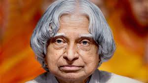

Dr. APJ Abdul Kalam, the "People's President" and "Missile Man of India," was a visionary scientist and the 11th President of India. Born in Rameswaram, his journey from selling newspapers to leading India's premier space and defense programs—including the development of Agni and Prithvi missiles—remains an inspiration.